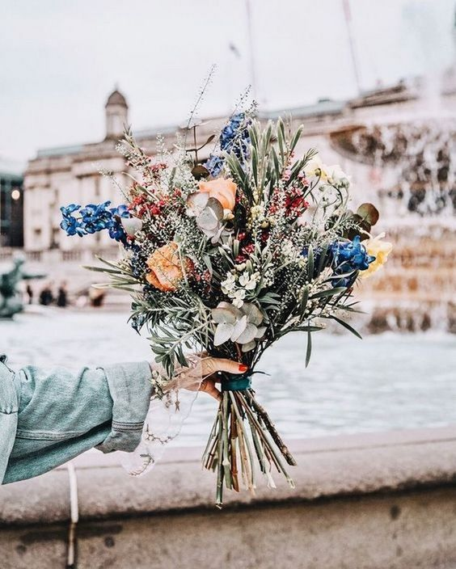

Qui suis-je ?
Jeune développeuse en devenir, j'aime particulière l'aspect technique du Front-end : j’aime intégrer ou imaginer des interfaces modernes, les rendre responsive et les dynamiser avec des animations élégantes.
De nature débrouillarde et autonome dans mon travail, j’aime apprendre de nouvelles technologies, passer du temps à résoudre des problèmes et réaliser du de qualité.
Mes compétences
- HTML5 | CSS3 |
- Photoshop | Illustrator |
Langues
Français, langue maternelle
Anglais, compétence professionnelle
Centres d'intérêt
- Jeux vidéo (licence Blizzard et Riot Games)
- Arts plastiques (céramique, poterie, linogravure, dessin, peinture)
- Apiculture (obtention diplôme apiculteur au "Rucher de Lille")
- Escalade et randonnées
- Faune/Flore
Cassandre Truffin
Concepteur developper d'application junior
- Truffincassandre@gmail.com
- 06 24 79 55 20
- 16 rue de la voie Lactée, Lunel, 34 400
Mes expériences professionelles
2022-2023
Formation concepteur developpeur d'application, , M2ii formation
- Réalisations de sites web, d’interfaces et d’applications web sous Angular et Bootstrap
- Intégration de templates Photoshop, Illustrator
- Animations CSS / JS
- Responsive design
- UI / UX Design
- Projets en équipe
Études & formations
- 2022-2023 : Formation concepteur développer d'application
- 2019-2022 : Infirmière d'Etat en réanimation pédiatrique
- 2016-2019 : Institut Gernez Rieux : Infirmière diplômée d'Etat.
- 2014-2015 : Institut Pasteur : Prépa concours infirmier.
- 2010-2014 : AcTournai : Ecole supérieure des Arts-Académique des Beaux-Arts.
- 2009-2010 : CNED, Prépa Arts-Plastiques.
- 2007-2009 : Obtention du Baccalauréat Littéraire option Arts plastiques.
Vous pouvez trouver une autre version plus détailler de mon CV en cliquant ici . ♡
